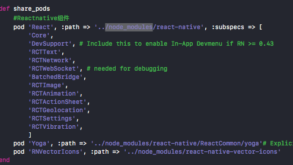
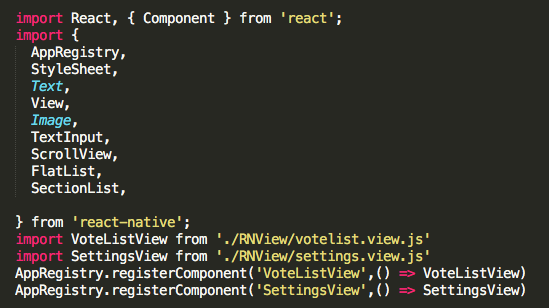

本系列文章作为学习RN期间的总结
- React Native如何集成到现有项目中
- React Native和Native间的通信实践
- RCTRootView、RCTBridge做了什么
- Object-C和JS通信概述
虽然ReactNative能做到iOS和Android的大部分逻辑共享一套代码，节约开发成本；拥有像JSPatch那样的热修复功能，为线上问题提供非常灵活的解决方案。但是为什么大部分公司还是持观望态度，或者只在产品的某些部分用RN进行开发呢？
首先，React Native官方的某些组件仍然存在性能瓶颈，开发复杂场景的时候可能会遇到性能问题，像ListView，动不动就渲染整个视图，虽然推出了FlatList但是也存在着一些其他的Bug。其次，RN的周边生态并不完善，很多OC或Swift上已有的Library在NR上需要通过RN提供的方法重新用JS实现或者需要把这些库桥接到RN。因此大部分公司会选择交互不多，页面不太复杂的场景来尝试。本章，主要介绍如果在已有的App中集成React Native。
关键步骤
- 设置RN的依赖和目录结构
- 搞清楚你要在你的项目中使用的RN组件
- 使用CocoaPods添加你要使用的RN组件的依赖
- 使用npm安装JS组件
- 在JavaScript环境下，开发你的RN模块
- 添加一个
RCTRootView到你的app。它将会作为容器展示你的RN模块。 - 启动RN服务，Run你的App。
前置条件：安装Node、npm最新版本(npm是基于Node实现的包管理工具和iOS的CocoaPod地位相当)
设置RN的依赖和目录结构
为React Native项目创建一个新的文件夹，在文件夹中新建/ios目录，拷贝所有原项目的内容到/ios目录下。
安装JavaScript依赖
在刚刚新建的文件夹中（即根目录中）创建一个package.json文件，并添加一下内容：
{
"name": "Snapvote",
"version": "0.0.1",
"private": true,
"scripts": {
"start": "node node_modules/react-native/local-cli/cli.js start",
"test": "jest"
},
"dependencies": {
"react": "16.0.0-alpha.12",
"react-native": "0.48.4",
"react-native-vector-icons": "^4.4.2",
"whatwg-fetch": "^2.0.3"
},
"devDependencies": {
"babel-jest": "21.2.0",
"babel-preset-react-native": "4.0.0",
"jest": "21.2.0",
"react-test-renderer": "16.0.0-alpha.12"
},
"jest": {
"preset": "react-native"
}
}
接下去，安装react和react-native包。打开Terminal，在你项目的根目录下面执行下面命令：
npm install --save r16.0.0-alpha.12 react-native
要确保这里安装的版本和package.json里说明的版本一致
执行这个命令之后，将会在项目的根目录下创建一个/node_modules的目录，这里保存着所有你项目中所需的JavaScript依赖。
安装CocoaPods
这里就不说了
配置CocoaPods依赖
在你集成RN到你项目中之前，你需要选择你要使用的React Native库。你将通过CocoaPod库的开发模式将其集成进去。
 这些库的
这些库的subspec文件都会在/node_modules目录下被说明,最后执行pod install命令，所有的React Native库依赖到这里就都准备好了。

业务代码
创建
index.js文件 在项目的根目录下创建index.js文件，这个文件是你RN项目的 入口 ，所有在Native中要用到的RN模块都在这里面进行注册。例如项目中的投票列表、设置页面等。各个模块的名称要和Native中的模块名称对应。 添加React Native 代码（JavaScript和CSS）
'use strict';
import React from 'react';
import {
AppRegistry,
StyleSheet,
Text,
View,
FlatList,
NativeModules,
Image,
ActivityIndicator,
TouchableOpacity,
ScrollView,
Switch,
TouchableWithoutFeedback,
Alert,
NativeEventEmitter,
} from 'react-native';
import StarRatingView from './starRating.view.js'
var { width, height } = require('Dimensions').get('window');
var nativeModuleManager = NativeModules.XYRCTBrigeModule;
class SettingsView extends React.PureComponent{
constructor(props){
super(props);
}
.....
.....
在Native中使用RCTRootView作为RN模块的容器。所有通过RN渲染出来的视图都会展示在该View上。
#import <React/RCTBundleURLProvider.h>
#import <React/RCTRootView.h>
@implementation AppDelegate
- (BOOL)application:(UIApplication *)application didFinishLaunchingWithOptions:(NSDictionary *)launchOptions
{
NSURL *jsCodeLocation;
//设置获取JavaScript文件的路径，从服务器或者本地文件获取
#if DEBUG
jsCodeLocation = [NSURL URLWithString:@"http://10.0.30.119:8081/index.ios.bundle?platform=ios"];
#else
jsCodeLocation = [[RCTBundleURLProvider sharedSettings] jsBundleURLForBundleRoot:@"index.ios" fallbackResource:nil];
#endif
//通过URL、模块名称加载对应的RN视图，生成一个OC对象`RCTRootView`，最后将该View添加到controller的View上
RCTRootView *rootView = [[RCTRootView alloc] initWithBundleURL:jsCodeLocation
moduleName:@"TabberView"
initialProperties:nil
launchOptions:launchOptions];
rootView.backgroundColor = [[UIColor alloc] initWithRed:1.0f green:1.0f blue:1.0f alpha:1];
self.window = [[UIWindow alloc] initWithFrame:[UIScreen mainScreen].bounds];
UIViewController *rootViewController = [UIViewController new];
rootViewController.view = rootView;
self.window.rootViewController = rootViewController;
[self.window makeKeyAndVisible];
return YES;
}
到这里就完成了一个简单React Native App的集成。
测试
- 因为HTTPS的限制，请将Domain添加到
Info.plist的白名单<key>NSAppTransportSecurity</key> <dict> <key>NSExceptionDomains</key> <dict> <key>localhost</key> <dict> <key>NSTemporaryExceptionAllowsInsecureHTTPLoads</key> <true/> </dict> </dict> </dict> - 执行
npm start开启本地服务 - Xcode run.